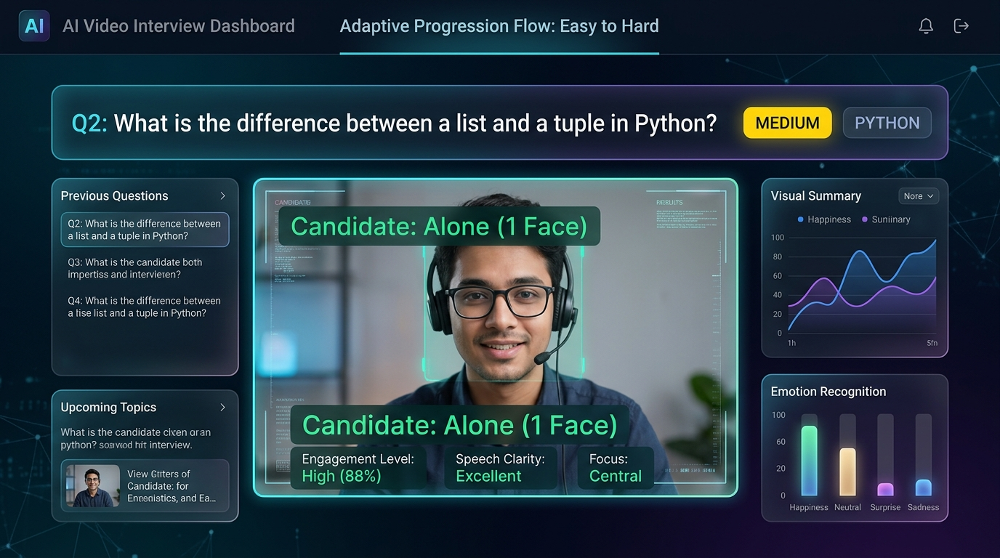
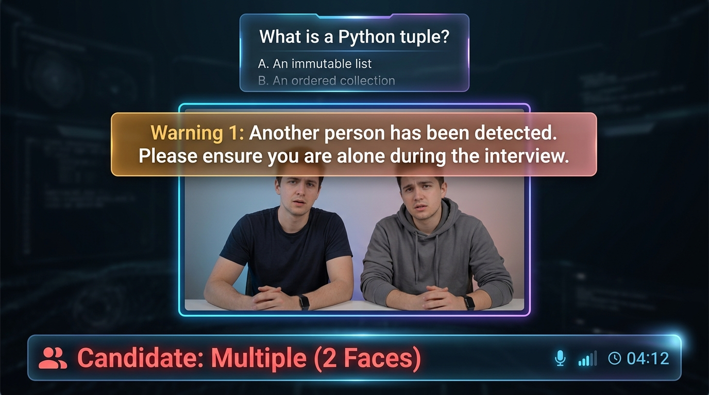

An AI-powered technical interview platform developed as a final-year Computer Engineering project.
An end-to-end automated interview platform that conducts webcam interviews, extracts multimodal behavioral signals (Text, Speech, and Facial Dynamics), and generates objective AI assessment scores without relying on external third-party APIs.
Step-by-step workflow from candidate profile enrollment to real-time interview assessment.
Register with your name and capture a webcam baseline profile photo. The system issues your permanent Candidate ID (e.g. CID-2026-XXXXXX).
Upload your PDF/DOCX resume. The NLP engine extracts technical skills, while the Name Verification Guard ensures the CV belongs to the registered user.
Enter the webcam studio. The system reads questions via TTS, listens to spoken responses, and adapts technical difficulty dynamically.
Webcam frames monitor for solitary test conditions. If an unauthorized second face appears, the system immediately triggers a warning alert.
Inspect your multimodal score breakdown (Technical, Communication, Confidence) with strengths, tips, and question-by-question playback.
How the platform monitors test integrity and adapts question difficulty during a live assessment.

